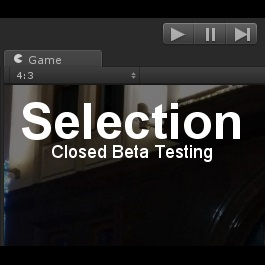

Selection - a game based on Unity engine.
At the moment, the fate of the game is still being decided. This is the so-called training ground for entertainment and gaining experience in creating games.
Implemented local multiplayer and a simple map.
You can follow the updates and download the game in the Telegram channel, or in the downloads section
System requirements:
OS - Windows 7 x64 and above.
GPU - Intel HD Graphics 3000
RAM - 128MB
80 megabytes of free space